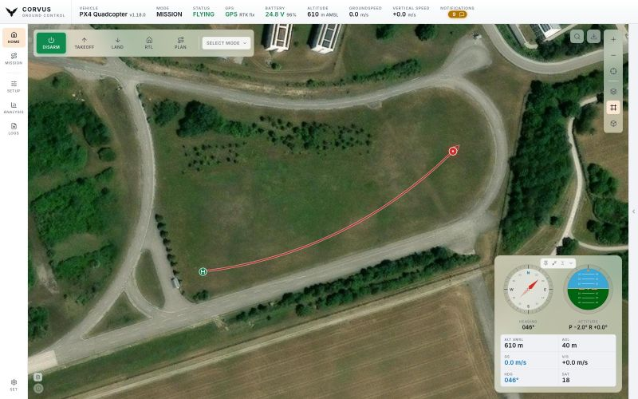

Fly
Map, HUD and flight controls
The map is the centre of Corvus. Everything you need while the aircraft is in the air sits on it or floats over it, and the side panel can be collapsed so the whole window becomes the operational picture.


The map
Your aircraft is drawn with a heading cone and a white ring around it, so it stays visible over any imagery. The home point is a landing pad mark on the exact coordinate. The map service and layer (satellite, streets, terrain and so on) are chosen with the layer control on the map's right edge; see Map service for the services and their keys.
The flown track
The path the aircraft has flown trails behind it in red. It stays until you clear it with the small button in the map's corner: a link drop, a vehicle reboot and a restart of Corvus all keep it. When the aircraft lands and takes off again, the earlier flights turn a lighter red, so the flight in progress stands out. Two switches under Settings, Flown track change this:
- Earlier flights in their own colour, on by default.
- Clear the track whenever Corvus starts or the autopilot reboots, off by default.
Click the map
Click anywhere on the map to open a small menu for that spot:
- Fly to this point
-
Available once the aircraft is connected and armed; the menu says what is missing otherwise, and shows the height it will use (the PLAN altitude, see below).
For an aircraft that is already in the air, Corvus sends
MAV_CMD_DO_REPOSITIONrather than a mission. A PX4 aircraft that is holding stays in Hold and flies there, with no switch into Mission mode and back, and the mission stored on the aircraft is left alone. ArduPilot does the same in GUIDED. An aircraft that is armed but still on the ground gets a short mission with a takeoff first. - Set home here
- Moves the home point, which is where a return to launch goes. It needs a connection but not a disarmed aircraft, because redirecting the return in flight is exactly when it is needed.
The flight bar
Across the top of the map: ARM, TAKEOFF, LAND, RETURN and PLAN, with the flight mode picker beside them.
- ARM / DISARM
- Arms or disarms. Whether arming is allowed is the autopilot's decision; if it refuses, its reason is shown.
- TAKEOFF
- Opens a small panel with an altitude slider (1 to 120 m). Confirming arms the aircraft and takes off, in the order the autopilot needs: on PX4 the command first, then arming; on ArduPilot GUIDED, arming, then the command. See PX4 and ArduPilot.
- LAND and RETURN
- Land where the aircraft is, or return to launch. RETURN uses the heights and behaviour set on the Safety page.
- PLAN
- A quick way to fly a few points without the full planner. Press it, click points on the map, set the height (1 to 50 m above home) and press FLY. For anything longer, use the Mission planner.
- Flight mode
- Lists the modes the connected firmware actually has, in the stack's own words ("Return", not "RTL"), and only once the firmware version is known. PX4 sub modes such as Orbit and Position Slow are shown as themselves.
Every command shows its progress on the button and reports the autopilot's answer. A rejected command says why, in a notification.
By default the bar keeps its full size and narrows only when the row really does not fit. Settings, Flight bar makes it step down earlier, as soon as it would cover more than half the map: first to the width of each word, then to icons alone.
What needs a position, and what does not
Corvus asks the aircraft for its home position as soon as it connects, and needs home (or a global position) only where an altitude has to be converted or set:
| Action | Without a position reference |
|---|---|
| Takeoff | Waits briefly, then sends the takeoff anyway with the altitude left unspecified, so the vehicle uses its own configured takeoff altitude. You get a warning, not a refusal. |
| Fly to points | Unaffected. Mission items carry your height above home directly, in the relative altitude frame, so nothing has to be converted. A single point for an aircraft already in the air is sent as a reposition, which on PX4 needs home to convert the height; without it Corvus uses the mission instead. |
| Set home | Waits briefly, then refuses. This altitude is not being converted: it is the altitude home will have, and home altitude is what a return descends to. Guessing it would move the landing point up or down as a side effect of moving it sideways. |
Whether the aircraft can actually take off stays the autopilot's decision; if it cannot, its own refusal reaches you with a reason.
The flight HUD
The instrument panel (compass, attitude indicator, altitude, speeds, heading and satellite count) floats over the map in a window you control:
- Grab it anywhere that is not a button to move it.
- Pin it so a stray gesture cannot move it.
- Shrink it to a compact size, or collapse it away.
- Double-click it to send it back to its corner.
- Take it off the map entirely with Settings, Flight HUD, Show the flight HUD.
Where you put it stays put: across restarts, across a trip to Setup and back, and when the side workspace slides open, a window parked at the right edge moves in with it rather than disappearing behind it. The on-screen control pads and the checklist window behave the same way.
The compass is north up by default. Settings, Compass, Lock compass nose up turns the rose instead, so the top of the dial is always where the aircraft is heading.
Notifications and toasts
Messages from the autopilot and from Corvus collect in the notification centre. The count on its badge is coloured by the worst thing unread:
| Badge | Meaning |
|---|---|
| Green | Nothing unread. |
| Blue | Only informational lines. A normal flight produces a steady trickle of these. |
| Amber | At least one real warning. |
| Red | At least one critical message. |
The badge used to turn amber for anything unread, which taught operators to ignore the one colour that has to keep working. Now amber means a warning.
A new warning or critical also appears as a toast in the top right corner: once per message within a short window, and never by opening the notification centre over the map. Click a toast to open the centre. Informational lines ("Takeoff detected") only go to the centre, and PX4's log file announcements stay in the console.
At most three toasts stand at once. A new one always shows, and the one that makes room is the oldest that is not critical. Toasts leave on their own: an informational one after about 5 seconds, a warning after 6, a critical after 20. The centre keeps every one of them, and the badge stays red until you have looked.
A kill switch and a disarm get toasts of their own, titled Kill switch and Disarmed, with the reason the vehicle gave, such as "Disarmed by the kill switch" or "Disarmed by auto disarm after landing". An engaged kill switch is critical, and its toast goes when the switch is released. When the vehicle disarms without naming a reason (ArduPilot never does), a plain Disarmed toast says so, and a reason arriving a moment later replaces it.
When the vehicle says a problem is over, its line is marked resolved: it turns grey but keeps its symbol, no longer counts on the badge, and leaves the centre a minute later. That happens to the kill switch line when the switch is released, and to every failed preflight check ("Preflight Fail:" on PX4, "PreArm:" on ArduPilot) once the vehicle is ready to fly or arms. A warning the vehicle has not resolved stays until you dismiss it. Informational lines leave after a minute.
When the vehicle becomes ready to fly (from NOT READY, from a released kill switch, or on a fresh link), a short Ready to fly toast says so. It is not shown after a landing, where the Disarmed toast already says what happened.
Manual controls on screen
Three optional input methods can be switched on under Settings, Controls. All three are off by default.
- Virtual joystick
- Two sticks on screen: throttle and yaw on the left, pitch and roll on the right.
- Arrow keys
- Your keyboard's arrow keys fly pitch and roll.
- WASD
- W and S for thrust, A and D for yaw.
The two key pads share one window. A key strength slider (25 to 100 %, 50 % by default) sets how far a held key pushes the stick, the same for arrows and WASD. Hold Shift to fly at twice that strength for as long as it is down: the slider is the cruise, Shift is the dash. The on-screen sticks are not affected by either; they always reach their own stops.
These are input sources only. They never arm, change mode or override a failsafe. On ArduPilot they only work when the aircraft accepts stick input from Corvus's system ID; see One setting on ArduPilot.
Preflight checklist
An optional window on the Home map with your own checklist, ticked off item by item before each flight. Switch it on with the Preflight checklist card on Safety & Sensors, where Edit checklists opens the editor.
- Write as many lists as you like, each with a name, items and section headings, and pick one in the window. A station that has not written one gets a short standard list: propellers and battery, weather and airspace, GPS and home, failsafe and return altitude, and the area clear of people.
- Ticks belong to the flight, not to the setup. They are kept on this computer only. The lists themselves are part of the station's settings, so they survive a reinstall and travel with a settings export.
- Reordering keeps the ticks. An item is remembered by its text, so rewording one clears only that one.
- Arming with open items is allowed. Corvus shows a warning, once, and nothing more. The checklist is your memory aid; a ground station that refused to arm over a list it cannot verify would be blocking on the wrong thing.
The window moves, folds and returns to its corner on a double-click, like the HUD. Its × hides it; the card on Safety & Sensors brings it back without switching the feature off.